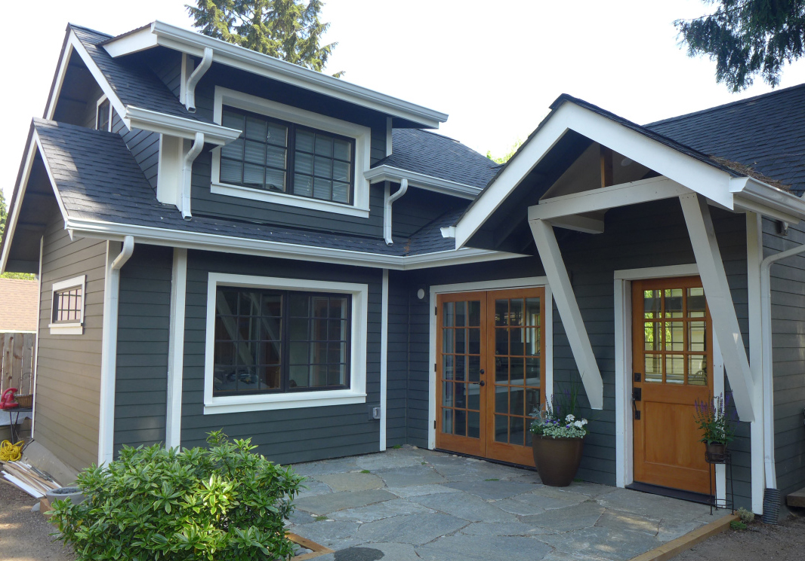

미국인들도 시부모/장인장모를 모시고 사는가 ?
게시: 2019-07-04T06:30:49+09:00
제가 고딩, 아니 대딩 때만 해도 서양의 모든 것은 다 우수한 것이라는 환상이 온 사회에 팽배해있었습니다. (실은 여전히 그런 경향이 있지요.) 가령 우리는 굉장히 좋은 경치를 보면 '꼭 외국같다' 라는 말을 하지요. 잘 생긴 사람을 보면 '꼭 외국인처럼 생겼다' 라고 하고요. 그에 비해서 가령 영국인들은 잘 생긴 외국인을 보면 '꼭 영국인처럼 생겼다' 라고 말한다는 이야기를 어디서 읽은 기억이 납니다. 제가 근 50년 가까이 천하를 주유하며 (닭살 돋지만 꼭 써먹어 보고 싶은 표현이었습니다...) 느낀 바는, 어떤 사회든 잘 생긴 사람은 잘 생겼고 못 생긴 사람은 못 생겼다는 것입니다. 그래서 저는 UN인가에서 정의를 내렸다는 인종이나 민족에 대한 다음 표현이 정말 잘 만들어진 것이라고 생각합니다. 어느 집단에 소속되었다고 해서 특정인에 대해 이러쿵저러쿵 판단하는 것은 매우 잘못된 일입니다. "집단의 차이는 개인의 차이보다 크지 않다" 아무튼, 그런 서양 우월주의 사상을 주입받으며 자란 저는, 서양 (그러니까 미국과 서유럽) 사람들은 고등학교만 졸업하면 모두 독립해서 대학도 자기 힘으로 벌어서 다니고 부모님을 모시고 산다는 것은 꿈에도 생각하기 어려운 일이라고 알고 지냈습니다. 그런데 해외에 나가볼 기회가 많아지고 인터넷이 발달하면서 그런 것이 다 허구에 불과하다는 것을 이젠 알게 되었지요. 가령 서양 학생들도 자기 힘으로 벌어서 대학을 다닌다는 것은 절대 불가능한 일이라서, 가난한 애들은 학자금 대출을 받고 부자집 애들은 부모님 장학금을 받아서 다니는 것이더군요. 또 의외로 고등학교 졸업은 커녕 대학 졸업 이후에도 부모님 집에 얹혀사는 애들이 많은 것은 물론, 반대로 연로한 부모님을 모시고 사는 중장년 층도 의외로 많다는 것을 알게 되었습니다. 최근 본 FIRE (Financial Independence Retire Early) 레딧 포스팅 중에 그와 관련된 것이 있어서 흥미롭게 읽었습니다. 본문보다도 댓글이 서구 사람들이 부모님 모시고 사는 것에 대해 어떻게 생각하는지 더 잘 엿볼 수 있게 해주더군요. 주요 부문만 발췌해서 번역해보았습니다. https://www.reddit.com/r/financialindependence/comments/c5evfa/parents_want_to_live_with_us_help/ 내 in-law(결혼으로 맺어진 친척을 뜻하는 말로서 시부모나 시동생, 장인장모와 처제 등이 모두 in-law임 : 역주)들은 모두 괜찮은 분들이야. 아주 친절하고 인내심도 많고 자상해. 일평생 아주 열심히 일하셨고 60~65세 경에 은퇴를 해서 지금은 어느 섬에서 근사한 집과 4채의 단기 임대 부동산(short term rental properties, 아마도 콘도 같은 것을 말하는 듯 : 역주)을 소유하고 살고 계셔. 조만간 그 분들은 그런 부동산을 모두 팔아서 장기 임대 부동산(long term rentals, 아마도 일반 거주용 주택을 말하는 듯 : 역주)을 우리 거주 지역 근처에 매입하려고 하셔. 그 섬에서 운영하고 있는 단기 휴가용 임대 부동산보다는 장기 임대 부동산이 훨씬 수고가 덜 들어가기를 (less demanding) 바라시는 거지. 더 나아가 그 분들은 지금 살고 계신 주택도 팔아서 그 매각대금(약 $350k, 약 4억)을 우리 돈과 합쳐서 우리가 더 큰 주택을 사서 거기서 함께 살기를 바라셔. 주택담보대출과 전기수도세 등은 우리가 내고, 그 분들은 임대수익금으로 개인비용을 충당하면서 사시려는 거야. 그 계획에 대해 내가 고려하는 점들은 이런 거야 : 조건이 달렸다는 점 (Strings attached) - 부모님들이 우리와 함께 살기를 원하시는 것이 진짜일까 ? 우리가 그래달라고 부탁하는 건 아니거든. 오해는 마. 나 그 분들과 시간 보내는 거 좋아해. 하지만 그건 가끔씩 같이 지냈던거고, 기껏해야 2주간 그랬었던 거야. 그 분들은 이제 우리와 같은 집으로 이사해서 우리 일상 생활에 개입하기를 원하시는데, 특히 우리가 1~2년 안에 아이를 가질 계획이라서 그래. 사생활과 자율성의 상실 - 이게 허영심일까 자부심일까 ? 난 내 집에서 내가 원하는대로 살고 싶어. 하지만 계약금을 그 분들 돈으로 낸다는 것은 그 집이 "진짜" 내 집은 아니라는 생각이 들게 해. 마치 공유 시설처럼 느껴진달까 ? 재정 - 계약금을 그 분들 돈으로 해결한다면 우린 매월 돈이 좀 남게 되니까 그걸로 결국 우리 소유가 될 집에 대한 담보 대출을 좀더 빨리 갚아나갈 수 있어. 그 분들이 없어도 집이야 결국 살 수 있겠지만 더 작은 집만 살 수 있을 거야. 재정에 대한 생각 더 - 특히 어머니(mother-in-law)가 정말 친절한 분이고 또 우리가 애를 가지게 되면 애를 100% 봐주실 것이기 때문에 보육 비용에 있어서 엄청난 절약을 할 수 있게 될 거야. 그 분은 누구든 남을 돕는데 정말 열성을 보이시니까, 몸이 허락하는 한 우리 애 봐주시는데 있어 열과 성을 다 하실거야. 60세가 넘은 여성에게 기대하기 어려운 부분이긴 하지. 그 분은 정말 정력이 넘치신다니까. 하지만 내 아이가 뭘 배우는 지에 대해 내가 통제권을 가질 수 있을까 ? 그냥 어린이집(daycare)에 보내는 것보다는 더 확실한 통제권을 가질 것 같기는 해. 잘 모르겠군. 수동적 수입 - 내 남편(아... 저도 이 부분을 읽고서야 이 글을 쓴 사람이 여성이라는 것을 깨달았습니다. 바로 그 직전까지는 당연히 남자가 쓴 것이라고 생각했고, 저 위의 in-law들이란 당연히 장인장모라고 생각했어요. 저도 어쩔 수 없는 한국남자라서 이런 FIRE 사이트에서 돈 이야기를 하는 사람은 다 남자라고 생각했네요... 반성합니다. : 역주)과 나는 부동산에 투자를 하고 싶어. 시부모님이 함께 산다면 이 방면에 좀 경험이 있는 누군가와 함께 탐색을 시작할 수 있는 셈이야. 시부모님은 고등 교육을 받으셨고 부동산을 사고, 소유하고, 임대하고, 유지보수하고, 매각하는데 있어 아주 능수능란하시거든. 근데 내가 이런 고려 사항들에 대해 시부모님들과 차근차근 의논해가면서 어떻게 하면 내가 통제권에 집착하는 여자(control-freak)로 안 보일 수 있을까 ? 그러니까 분명히 장점도 있고 단점도 있어. 하지만 다른 사람들의 의견도 들어보고 싶네. 내가 뭐 놓친 부분이 있을까 ? 이 생각 하다보면 신경쇠약에 걸릴 정도야. 난 이런 거 해본 적이 없어서 시부모님들이 우리 집으로 이사해 들어오기 전에 기대치를 맞춰두고 싶거든. 그런데 우리나 시부모님들이 서로 같은 견해를 갖고 있지 않다는 것이 뒤늦게 드러나면 헬게이트 오픈(all hell brakes lose)인 거겠지. 난 가정적인 사람이니까, 난 주로 집에 있을 거야. 내 시부모님 발등을 밟을까봐 내가 내 집에 들어가기 싫은 상황이 되는 건 정말 싫어. 이하는 댓글들인데, 그 중 대표적인 것 몇개를 뽑아 보았습니다. - 그냥 니네 집에서 1 마일 정도 떨어진 집을 사시라고 하지 그래 ? 난 돈보다는 사생활이 더 중요하다고 봐. - 아냐, 아냐, 하지마. 이게 이 질문에 대한 내 대답이야. (역시 부모자식 간에도 눈치 안보고 평등하다는 미국인들도 시부모 모시고 사는 거 싫어하는 군요. : 역주) - 내 직장 동료가 그렇게 살았어. 걔들은 사돈어르신들이 살 별도의 거주구역이 딸린 (in-law suite) 집을 찾았지. 사돈어른들도 그 주택 매입에 $XXX를 보탰어. 꽤 큰 돈이었어. 그리고 지금은 그 집에서 월세 안 내고 사셔. 전기나 가스 같은 비용은 나눠서 내는 것 같은데, 그것 뿐이야. 이건 좀 새로운 개념 같은데, 그래도 모두 만족해하더라고. 걔들 사례에 있어 중요한 점은 사돈어른들이 자기들만의 주방, 침실, 거실, 욕실 등이 따로 있었다는 점이야. 너도 너의 이익을 지키기 위해 들고 일어날 권리가 있다구. 그 분들도 성인이니까, 니가 규칙을 정하는 걸 달가와하진 않으시겠지. 하지만 니가 기대치를 설정할 수는 있을거야. 만약 그 계획을 실행에 옮길 거라면, 아주 특정한 형태의 주택을 찾는게 좋을 걸. 집 구조나 뭐 그런 것에 있어서 관련된 모든 사람들과 의논하도록 하라구. (사실 이 ADU 부분은... 우리나라 환경에서는 같은 아파트 같은 동에 사는 것으로 충분히 대체 가능합니다. : 역주) - 행복으로 가는 길 = 장인장모 사망 - 남자는 그걸 바라겠지. - 사는 곳마다 다르겠지만 보조 거주 구역 (Accessory Dwelling Unit, ADU)은 많은 도시에서 점점 더 중요한 옵션이 되어가는 것 같아. 우리도 나중에 애를 봐주실 분이 필요하게 되면 지금 우리 사는 집에 사돈어른들을 위한 ADU를 지을 계획이야.

(ADU의 전형적인 예입니다.)
- 덴버(콜로라도 주에 있습니다 : 역주) 지역에서도 그런 ADU 많이 봤어. 내 와이프의 가족들이 한 집에서 세 가구가 모여 살 것을 고려 중이거든. 할아버지 할머니가 ADU에 살고, 그 두 딸의 가족들이 큰 집을 나눠서 살 계획이더라. - 우린 우리 부모님하고 몇 년간 같이 살았어. 괜찮았어. - 우린 장인장모와 몇 개월 같이 살았어. 아주 끔찍했어. 가능한 빨리 빠져나왔지. 차라리 1년 간은 임대를 내서 그 분들하고 먼저 살아보고 결정하지 그래 ? 그러면 같이 살 때의 문제점들을 큰 돈을 미리 투자하지 않고도 미리 알 수 있게 될 거야. - 내가 그런 걸 고려하게 된다면 그건 집에 반드시 별도 거주 구역이 딸려 있을 때 뿐일 거야. 별도의 주방, 욕실, 거실 말이야. - 내 아빠가 우리하고 18개월 간 같이 사셨어. 괜찮았어. 하지만 부모님에게 집안 잡일 해달라고 시키는 건 어렵더라. 또 아빠는 청력이 나빠지기 시작해서 밤에 TV를 보실 때는 엄청 크게 볼륨을 높이시더라고. 우린 애들에게 집안 규칙을 엄격하게 적용하는 편인데, 가령 식탁에서는 절대 스마트폰 못 쓰게 하는 거 말이야. 근데 아빠는 저녁 드시면서 맨날 문자 확인하시더라구. 할아버지 할머니와 같이 사는데 애들 교육 방침과 맞지 않으면 정말 난처해져. 그러니까 내가 하고 싶은 말은 니네 시부모님이 이사 오시기 전과 후에 그 분들과 아주 톡 까놓고 의사 소통을 해야 한다는 거야. 모든 참여 구성원이 서로의 기대치를 분명히 이해해야지 (이 부분은 정말 합리적인 미국인들답네요. 배울 만한 점이라고 생각합니다. : 역주) - 나라면 진짜 어쩔 수 없는 상황 아니면 그런 짓 안 할 거야. 장인장모 또는 시부모가 항상 주변에 있다면 정말 스트레스 받을 거 같아. 그 분들에게 별도의 ADU를 지어드릴 정도로 큰 주택지를 사는 것이 가능한가 ? - ADU가 있으면 모두가 각자의 공간을 가지면서도 애를 봐줄 정도로 가깝게 지낼 수도 있고 경제적으로도 공조가 되지. 이웃집 vs. 룸메이트 식으로 생각을 하라구. 난 곧 장인장모가 되실 분들과 아주 잘 어울렸고 심지어 그분들이 가장 좋아하는 '자식'으로 인식될 정도였어. 그럼에도 불구하고 내가 그 분들하고 같이 살 작정을 하게 된다면 그건 그 분들이 치매에 걸렸을 때 뿐이야. 그 분들이 치매에 걸릴 경우 우리 경제 수단으로는 그 분들 돌볼 방법이 ADU에 모시는 것 밖에 없거든. 그거 외에는 내 사생활과 자율권을 포기할 가치가 없다고 생각해. 난 또 우리 부모님이 더 나이가 들면 모셔야 할 상황인데, 그를 위한 우리 계획은 ADU를 짓거나 우리집 옆집을 사는 거야. (미국인들 중에도 치매 걸린 장인장모를 모시겠다는 효자가 있군요... 그러나 치매는 정말 답이 안 나오는 상황일텐데... : 역주) - 그 분들에게 옆집을 사드려. 니네 부부가 성자가 아니라면 절대 같은 지붕 밑에 살지는 말라구. 공짜로 육아 서비스를 받게 되는 건 괜찮지. 하지만 우리 할아버지 할머니는 실제 아기가 생겼을 때 제대로 애를 봐주지도 않으셨어. 니 예감이 '이거 조심하는 것이 낫겠는데' 라고 이야기를 해준다면, 그 말에 따르는 것이 좋을거야. - 니 자신의 집에 대해 제몫을 포기한다는 것은 그럴 가치가 없는 일이야. 니 가족과 니 집은 당연히 너희들만의 것이 되어야 하는데, 니 계획대로 하면 넌 절대 '시부모님과의 공유'라는 느낌에서 벗어날 수 없을걸 ? 내 집은 성스러운 곳이야. 특히 애가 생기면 그게 얼마나 성스러운 곳인지 깨닫게 될 거야. 애 봐줄 분들이 생긴다고 하더라도, 나라면 절대로 그런 조건의 공동 생활은 하지 않겠어. 내 입장은 '난 내 와이프와 결혼을 한거지 장인장모와 결혼을 한게 아니야' 라는 거야. 한번 그렇게 공동 생활을 택하게 되면 그거 사실상 죽을 때까지 그렇게 살아야 할텐데, 그럼 거기서 빠져나오지 못할 거야. 이런저런 일들이 생길거라구. 가령 니 시부모님이 뇌졸증이나 암에 걸리거나, 죽거나, 뭐 그런 비극의 주인공이 되면 어쩔건데 ? 어떻게 그런 규칙들을 의논하면서 통제권에 집착한 여자처럼 안 보이겠냐고 ? 니 배우자 및 니 애들하고 같이 살고 모든 결정을 니들 부부가 내리는 것은 너무나 정상적인 일이야. 그렇게 시부모와 공동생활을 하게 되면 너와 니 배우자의 관계, 더 나아가 결혼에도 영향을 미칠 거야. 그건 잘못된 거지. 데이브 램지가 말하는 것처럼 "추수감사절 저녁식사는 절대 그 전과 같은 맛이 나지 않을 거야". 그거 하지마 ! (아마 이게 대부분의 미국인들 생각이 아닐까 해요. 하지만 다른 댓글에서도 보셨듯이 미국인들이라고 다 이렇게만 사는 것은 아니고 시부모나 장인장모를 모시고 사는 가족도 꽤 있는 것 같습니다. ADU라는 단어가 나올 정도니까요. : 역주)
-------------------
이하는 그냥 제 생각입니다. 미국인들 중에도 저렇게 장인장모나 시부모를 모시고 사는 사람들이 분명히 있습니다. 그런데, 저들이 자발적으로 그렇게 하려는 이유 중 하나는 시부모/장인장모와 수평적인 관계가 가능하기 때문인 것 같아요. 우리나라처럼 부모공경 노인우대가 무조건적으로 강요되는 분위기에서는 시부모나 장인장모와 한집에서 산다는 것이 부부에게는 엄청난 스트레스가 됩니다. 저쪽은 일방적으로 요구하고 이쪽은 무조건 따라야 하는 관계가 되어버리니까요. 그 때문에 요즘 젊은 부부들, 특히 젊은 며느리들은 어떤 경우에라도 시부모와 합가해서 사는 것을 완강하게 거부하는 경우가 많습니다. 그런 점 때문에 부모공경 노인우대의 전통이, 오히려 시부모가 버림받고 따돌림 당하는 결과를 낳게 된다고 봅니다.
차라리 서구식으로, 시부모와 며느리, 장인장모와 사위 사이가 수평적인 관계가 되어 서로 공평하게 요구할 것은 요구하고 타협할 것은 타협하는 관계가 된다면, 오히려 시부모 및 장인장모에게도 더 좋은 일이 되지 않을까 싶어요.
김창환 교수님의 글 (https://sovidence.tistory.com/800) 중에서 전에 읽은 내용이, 미국내 소수민족 중에서 우리나라 재미교포 여성들이 타민족과 결혼하는 비율이 매우 높다는 내용이 있었습니다. 반대로 재미교포 남성들은 (재미교포 여성들 중 상당수가 외국인과 결혼해버리니까) 짝을 찾지 못해서 한국에서 한국 여성을 데려와 결혼하는 비중이 높고요. 그런 현상이 나타나는 이유 중 하나가 재미교포 가정에서도 버리지 못한 한국적인 가부장 문화라는 분석이었습니다. 가부장 문화가 겉으로 보기엔 남성들에게 유리한 것 같지만, 궁극적으로는 여성들이 그런 문화의 남성과의 혼인을 회피하게 되므로 결국 그 피해는 남성에게 돌아간다는 내용이었습니다. 부모공경 노인공경이 강요되는 문화도 비슷한 결과를 내지 않을까 싶습니다.